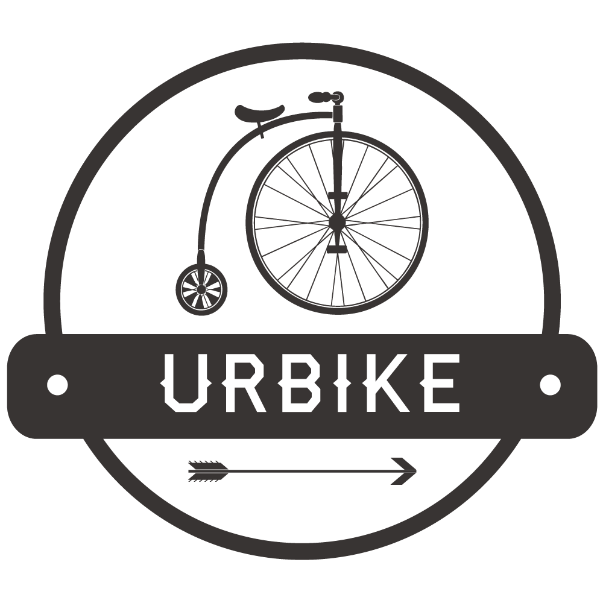

<ion-view title="UrBike" class="whereView">
    <ion-content class="padding">
        
        <p class="whereTitle">Où voulez-vous aller ?</p>
        <input type="text" class="whereInput" ng-model="$parent.where">
        <p class="bestResult"><span>Meilleur résultat: </span>{{result.formatted_address}}</p>
    </ion-content>
    <div class="bar bar-footer" ng-class="{'bar-dark': !result, 'bar-balanced': result}">
      <div class="title" ng-click="goToType()"><i class="ion-checkmark-round"></i></div>
    </div>
</ion-view>
